Welcome!
I am Benedicto M. Merales Jr.
A passionate math student that seeks to dive into the world of data.
Philippine Science High School - Eastern Visayas Campus
Engineering | Advanced Math | Physics Core
The Philippine Science High School Eastern Visayas Campus (PSHS-EVC) is one of the campuses of the Philippine Science High School System located at Pawing, Palo, Leyte.
University of the Philippines Cebu
Bachelor of Science in Mathematics
The University of the Philippines Cebu is a public research university and the youngest constituent university of the University of the Philippines System located in Cebu City, the capital city of Cebu province in the Philippines.
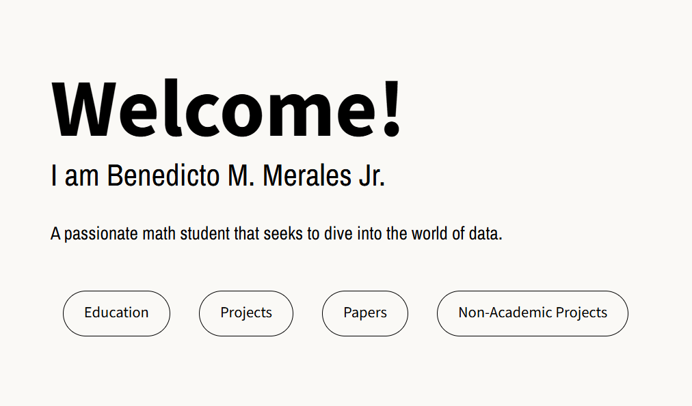
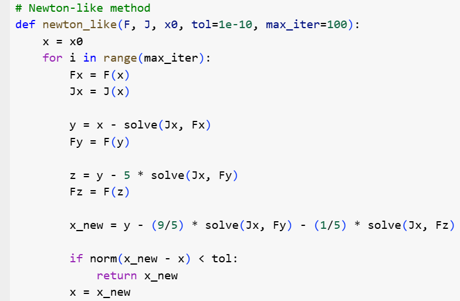
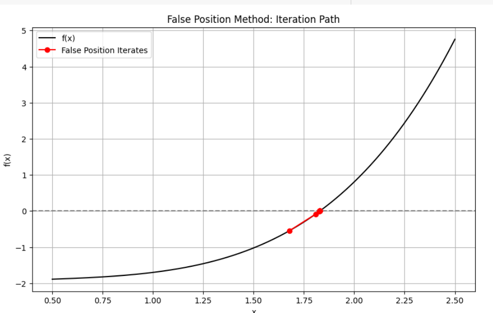
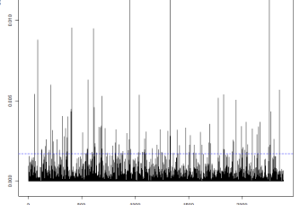
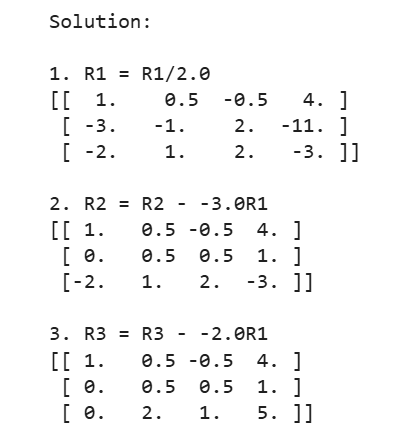
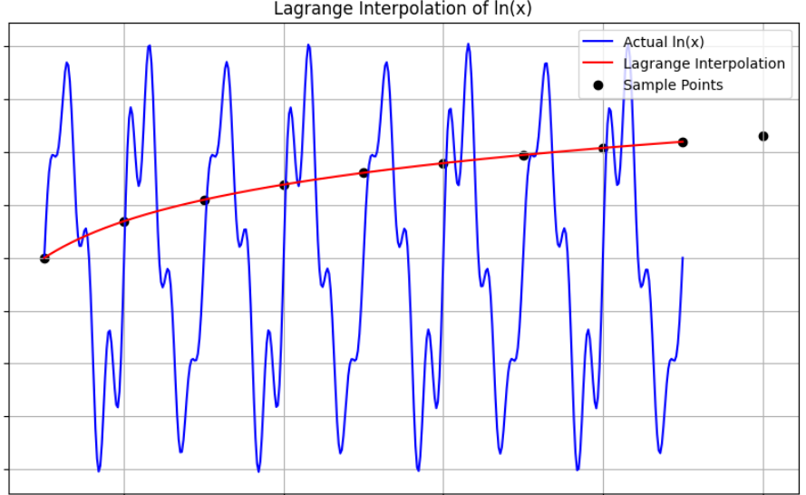
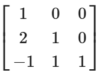
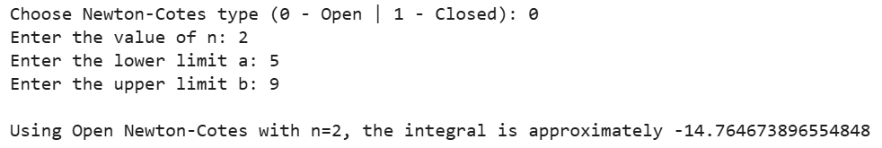
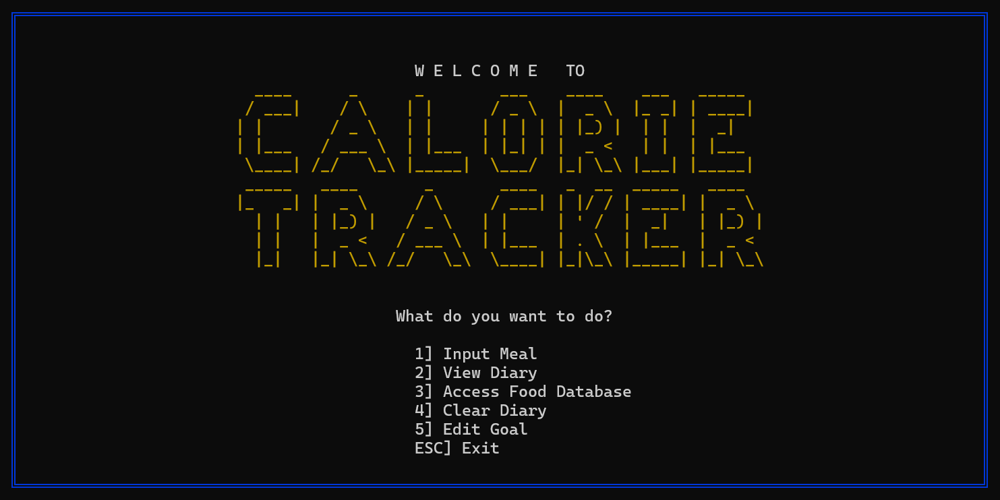
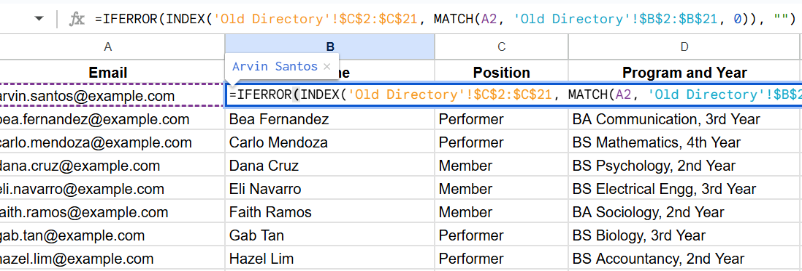
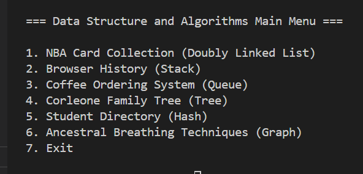
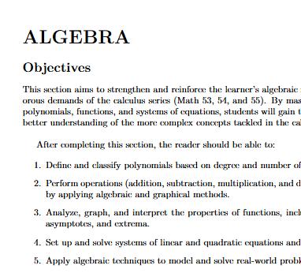
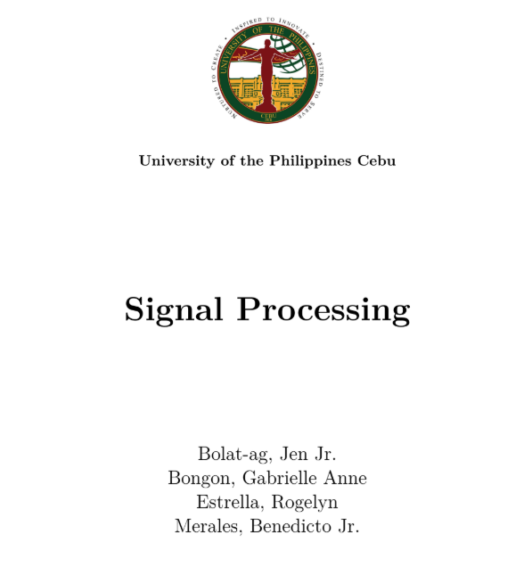
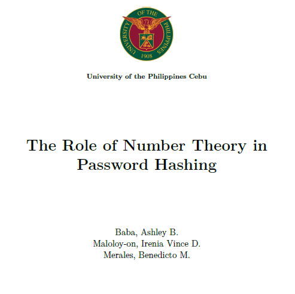
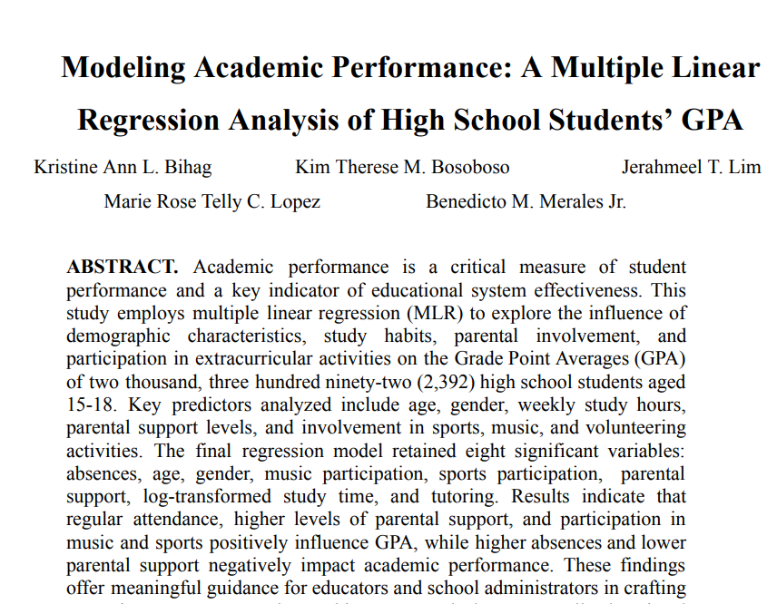
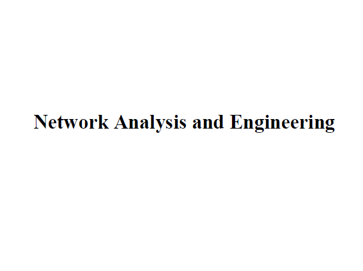
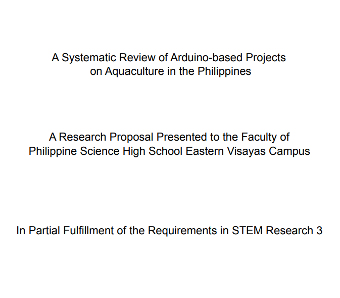
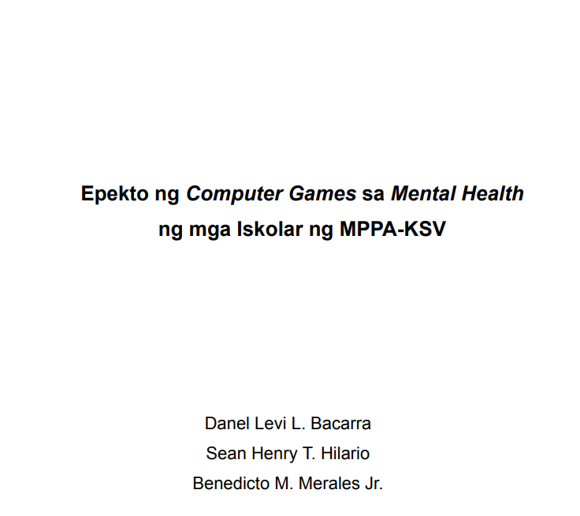
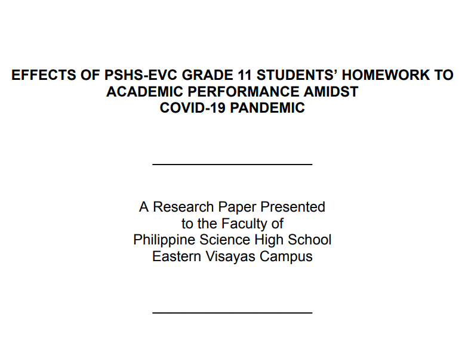